Target: lift one foot, slam it down, head snaps left on the first stomp; same foot again, head snaps right; ends standing.
"peak" = how high the stomping foot rose above its rest height; "down" = fastest downward speed of that foot on its way back to the floor
(free fall from 7 cm would reach ~1.2 m/s; a gentle lowering is 0.2-0.5 m/s); "peak-to-land" = seconds from the top of the lift to floor contact
(a stomp is < 0.15 s); "other planted" = fraction of the lift window with the other foot on the floor; head yaw = measured joint extremes,
+ is the robot's left. Verdict and the command timeline: REPORT.md.
Verdict: yes, usable as a fallback: the shipped kick skill is a real stomp (left foot 68 mm up, slams at 0.81 m/s, on the floor 0.36 s after the trigger, other foot never leaves the floor, no fall), and the standing net snaps the head ±60° right after. The one rule: re-centre the head before the second kick (a kick triggered with the head turned does nothing: B1-B3). The A-series (flamingo) is kept for the record only: rejected by Rémi.
| candidate | event | foot | peak (mm) | down (m/s) | peak-to-land (s) | other planted | head yaw L / R (°) | fell | max joint speed (rad/s) |
|---|---|---|---|---|---|---|---|---|---|
| B8_kick_recentre_0.5s_robotd * | kick 1 (head left after) | left | 68 | 0.81 | 0.1 | 98 % | +61 / -58 | no (tilt 6°) | 10.0 |
| kick 2 (head right after) | left | 68 | 0.81 | 0.1 | 98 % | -1 / -58 | no (tilt 6°) | 10.0 | |
| B1_kick_left_robotd | kick 1 (head left after) | left | 68 | 0.81 | 0.1 | 98 % | +61 / -3 | no (tilt 6°) | 10.0 |
| kick 2 (head right after) | left | 2 | 0.00 | 0.02 | 100 % | +56 / -57 | no (tilt 6°) | 10.0 | |
| B2_kick_left_full | kick 1 (head left after) | left | 68 | 0.81 | 0.1 | 98 % | +32 / -3 | no (tilt 6°) | 10.0 |
| kick 2 (head right after) | left | 2 | 0.00 | 0.02 | 100 % | +56 / -2 | no (tilt 6°) | 10.0 | |
| B3_kick_left_1s | kick 1 (head left after) | left | 68 | 0.81 | 0.1 | 98 % | +60 / -3 | no (tilt 6°) | 10.0 |
| kick 2 (head right after) | left | 2 | 0.00 | 0.02 | 100 % | +57 / -58 | no (tilt 6°) | 10.0 | |
| B4_kick_recentre_0.4s | kick 1 (head left after) | left | 68 | 0.81 | 0.1 | 98 % | +61 / -41 | no (tilt 6°) | 10.0 |
| kick 2 (head right after) | left | 48 | 0.81 | 0.06 | 98 % | -0 / -58 | no (tilt 6°) | 10.0 | |
| B5_kick_recentre_fast | kick 1 (head left after) | left | 68 | 0.81 | 0.1 | 98 % | +61 / -58 | no (tilt 6°) | 10.0 |
| kick 2 (head right after) | left | 68 | 0.81 | 0.1 | 98 % | -0 / -58 | no (tilt 6°) | 10.0 | |
| B6_kick_recentre_right | kick 1 (head left after) | right | 73 | 0.93 | 0.1 | 93 % | +57 / -55 | no (tilt 9°) | 9.4 |
| kick 2 (head right after) | right | 73 | 0.93 | 0.1 | 95 % | +1 / -57 | no (tilt 9°) | 9.4 | |
| B7_kick_recentre_yaw0.6 | kick 1 (head left after) | left | 68 | 0.81 | 0.1 | 98 % | +35 / -26 | no (tilt 6°) | 10.0 |
| kick 2 (head right after) | left | 48 | 0.81 | 0.06 | 98 % | +1 / -36 | no (tilt 6°) | 10.0 | |
| B9_kick_window_0.3s | kick 1 (head left after) | left | 68 | 0.69 | 0.12 | 93 % | +62 / -53 | no (tilt 6°) | 10.6 |
| kick 2 (head right after) | left | 68 | 0.69 | 0.12 | 95 % | +31 / -53 | no (tilt 6°) | 10.6 | |
| C1_walk_fwd_pulse | pulse 1 (head left after) | left | 11 | 0.20 | 0.12 | 89 % | +60 / -6 | no (tilt 8°) | 8.6 |
| pulse 2 (head right after) | right | 21 | 0.31 | 0.12 | 90 % | +58 / -57 | no (tilt 8°) | 8.6 | |
| C2_walk_turn_pulse | pulse 1 (head left after) | right | 5 | 0.09 | 0.06 | 98 % | +59 / -3 | no (tilt 7°) | 5.8 |
| pulse 2 (head right after) | right | 10 | 0.10 | 0.14 | 98 % | +58 / -56 | no (tilt 7°) | 5.8 | |
| C3_walk_back_pulse_bow | pulse 1 (head left after) | right | 58 | 0.68 | 0.06 | 75 % | -7 / -174 | FELL (tilt 85°) | 15.5 |
| pulse 2 (head right after) | right | 22 | 0.03 | 0.02 | 97 % | -18 / -81 | FELL (tilt 85°) | 15.5 | |
| C4_walk_side_pulse | pulse 1 (head left after) | right | 0 | 0.00 | 0.02 | 100 % | +58 / -3 | no (tilt 3°) | 5.8 |
| pulse 2 (head right after) | right | 2 | 0.01 | 0.02 | 100 % | +58 / -58 | no (tilt 3°) | 5.8 | |
| D1_hop_twice | hop 1 | left | 46 | 1.03 | 0.06 | 89 % | +3 / -4 | no (tilt 17°) | 15.3 |
| hop 2 | left | 39 | 1.00 | 0.06 | 91 % | +58 / -4 | no (tilt 17°) | 15.3 | |
| D2_stand_bounce | pulse 1 (head left) | right | 0 | 0.00 | 0.02 | 100 % | +55 / -28 | no (tilt 3°) | 11.0 |
| pulse 2 (head right) | left | 0 | 0.00 | 0.02 | 100 % | +55 / -62 | no (tilt 3°) | 11.0 | |
| D3_stand_roll_shift | pulse 1 (head left) | left | 1 | 0.00 | 0.02 | 100 % | +56 / -54 | no (tilt 3°) | 14.6 |
| pulse 2 (head right) | right | 4 | 0.02 | 0.02 | 99 % | +56 / -107 | no (tilt 3°) | 14.6 | |
| C5_walk_fwd_pulse_strong | pulse 1 (head left after) | left | 16 | 0.34 | 0.2 | 85 % | +57 / -5 | no (tilt 8°) | 8.2 |
| pulse 2 (head right after) | right | 18 | 0.28 | 0.1 | 88 % | +58 / -59 | no (tilt 8°) | 8.2 | |
| A1_flamingo_lift_drop (rejected) | stomp 1 (head left) | left | 72 | 0.48 | 0.36 | 99 % | +34 / -116 | no (tilt 28°) | 9.2 |
| stomp 2 (head right) | left | 81 | 0.36 | 0.44 | 100 % | +24 / -117 | no (tilt 28°) | 9.2 | |
| A2_flamingo_short_lift (rejected) | stomp 1 (head left) | left | 3 | 0.00 | - | 100 % | +34 / -115 | no (tilt 24°) | 12.2 |
| stomp 2 (head right) | left | 7 | 0.10 | 0.06 | 100 % | -19 / -115 | no (tilt 24°) | 12.2 | |
| A3_flamingo_then_stand (rejected) | stomp 1 (head left) | left | 33 | 0.26 | 0.1 | 95 % | +68 / -116 | no (tilt 28°) | 13.9 |
| stomp 2 (head right) | left | 31 | 0.29 | 0.16 | 96 % | -3 / -137 | no (tilt 28°) | 13.9 | |
| A4_flamingo_then_stand_bow (rejected) | stomp 1 (head left) | left | 81 | 0.68 | 0.24 | 97 % | +3 / -174 | FELL (tilt 88°) | 16.1 |
| stomp 2 (head right) | left | 40 | 0.17 | 0.16 | 97 % | -6 / -123 | FELL (tilt 88°) | 16.1 | |
| A6_flamingo_mirror_then_stand (rejected) | stomp 1 (head left) | right | 107 | 0.74 | 0.38 | 62 % | +94 / -61 | FELL (tilt 90°) | 16.4 |
| stomp 2 (head right) | right | 27 | 0.06 | 0.02 | 59 % | -11 / -94 | FELL (tilt 90°) | 16.4 | |
| A5_flamingo_hold_then_stand (rejected) | stomp 1 (head left) | left | 113 | 1.05 | 0.14 | 94 % | +57 / -144 | no (tilt 28°) | 15.2 |
| stomp 2 (head right) | left | 112 | 1.09 | 0.14 | 95 % | -3 / -165 | no (tilt 28°) | 15.2 |
B5 timing with robotd's default 0.5 s kick window (no robotd.toml change): kick, head LEFT 0.6 s, centre 0.4 s, kick, head RIGHT, centre
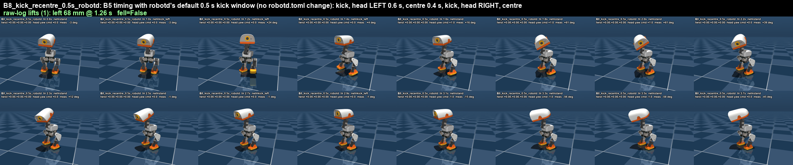
kick 1 (head left after): foot left, peak 68 mm, down 0.81 m/s, peak-to-land 0.1 s, other foot planted 98 %, head yaw L +61° / R -58° kick 2 (head right after): foot left, peak 68 mm, down 0.81 m/s, peak-to-land 0.1 s, other foot planted 98 %, head yaw L -1° / R -58° fell False, max tilt 5.8°, ends upright True, max joint speed 10.0 rad/s
ball_kick_left, robotd kick window 0.5 s, twice, head yaw on the standing net after each
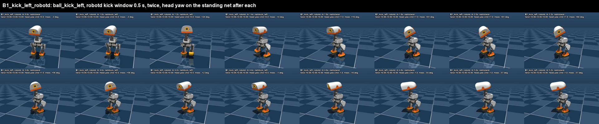
kick 1 (head left after): foot left, peak 68 mm, down 0.81 m/s, peak-to-land 0.1 s, other foot planted 98 %, head yaw L +61° / R -3° kick 2 (head right after): foot left, peak 2 mm, down 0.00 m/s, peak-to-land 0.02 s, other foot planted 100 %, head yaw L +56° / R -57° fell False, max tilt 5.8°, ends upright True, max joint speed 10.0 rad/s
ball_kick_left, full 3 s window (infer_policy.py style), twice, head yaw after each
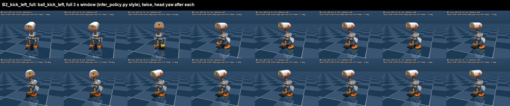
kick 1 (head left after): foot left, peak 68 mm, down 0.81 m/s, peak-to-land 0.1 s, other foot planted 98 %, head yaw L +32° / R -3° kick 2 (head right after): foot left, peak 2 mm, down 0.00 m/s, peak-to-land 0.02 s, other foot planted 100 %, head yaw L +56° / R -2° fell False, max tilt 5.8°, ends upright True, max joint speed 10.0 rad/s
ball_kick_left, 1.0 s window, twice, head yaw after each
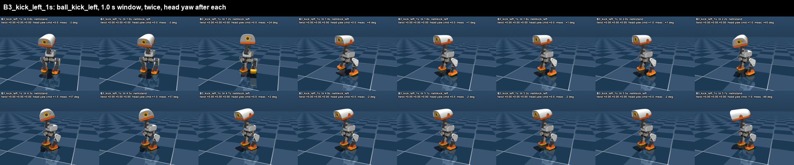
kick 1 (head left after): foot left, peak 68 mm, down 0.81 m/s, peak-to-land 0.1 s, other foot planted 98 %, head yaw L +60° / R -3° kick 2 (head right after): foot left, peak 2 mm, down 0.00 m/s, peak-to-land 0.02 s, other foot planted 100 %, head yaw L +57° / R -58° fell False, max tilt 5.8°, ends upright True, max joint speed 10.0 rad/s
ball_kick_left, 0.4 s window, head LEFT 0.9 s, head back to centre 0.6 s, kick again, head RIGHT, centre (2.0 s between kicks)
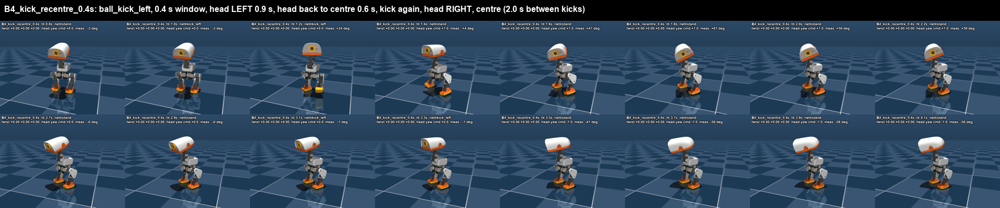
kick 1 (head left after): foot left, peak 68 mm, down 0.81 m/s, peak-to-land 0.1 s, other foot planted 98 %, head yaw L +61° / R -41° kick 2 (head right after): foot left, peak 48 mm, down 0.81 m/s, peak-to-land 0.06 s, other foot planted 98 %, head yaw L -0° / R -58° fell False, max tilt 5.8°, ends upright True, max joint speed 10.0 rad/s
Same as B4 but faster: head yaw 0.6 s, centre 0.4 s (1.4 s between kicks)
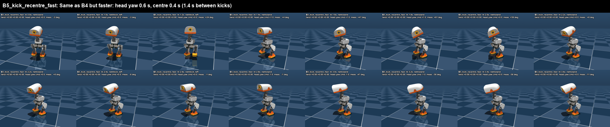
kick 1 (head left after): foot left, peak 68 mm, down 0.81 m/s, peak-to-land 0.1 s, other foot planted 98 %, head yaw L +61° / R -58° kick 2 (head right after): foot left, peak 68 mm, down 0.81 m/s, peak-to-land 0.1 s, other foot planted 98 %, head yaw L -0° / R -58° fell False, max tilt 5.8°, ends upright True, max joint speed 10.0 rad/s
B4 with the RIGHT foot (ball_kick_right), head left then right
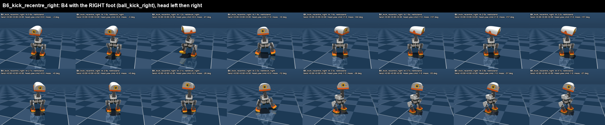
kick 1 (head left after): foot right, peak 73 mm, down 0.93 m/s, peak-to-land 0.1 s, other foot planted 93 %, head yaw L +57° / R -55° kick 2 (head right after): foot right, peak 73 mm, down 0.93 m/s, peak-to-land 0.1 s, other foot planted 95 %, head yaw L +1° / R -57° fell False, max tilt 9.2°, ends upright True, max joint speed 9.4 rad/s
B4 with a smaller head yaw (0.6 rad = 34 deg) so the recentre is quicker
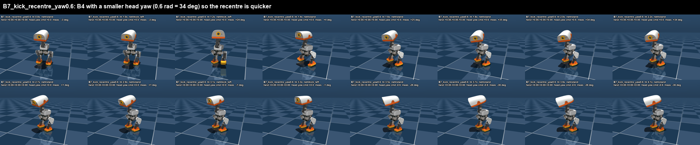
kick 1 (head left after): foot left, peak 68 mm, down 0.81 m/s, peak-to-land 0.1 s, other foot planted 98 %, head yaw L +35° / R -26° kick 2 (head right after): foot left, peak 48 mm, down 0.81 m/s, peak-to-land 0.06 s, other foot planted 98 %, head yaw L +1° / R -36° fell False, max tilt 5.8°, ends upright True, max joint speed 10.0 rad/s
B5 with a 0.3 s kick window: the standing net takes over while the foot is still coming down, the head snap starts earlier
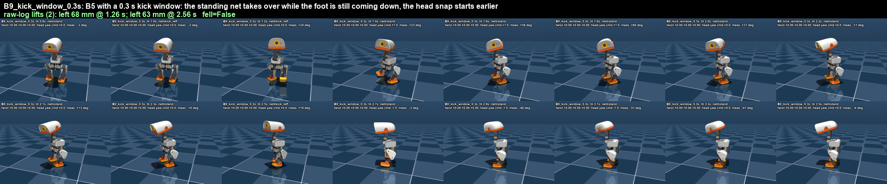
kick 1 (head left after): foot left, peak 68 mm, down 0.69 m/s, peak-to-land 0.12 s, other foot planted 93 %, head yaw L +62° / R -53° kick 2 (head right after): foot left, peak 68 mm, down 0.69 m/s, peak-to-land 0.12 s, other foot planted 95 %, head yaw L +31° / R -53° fell False, max tilt 5.8°, ends upright True, max joint speed 10.6 rad/s
alpha_walking: vx=+0.4 for 0.3 s, twice, head yaw on the standing net after
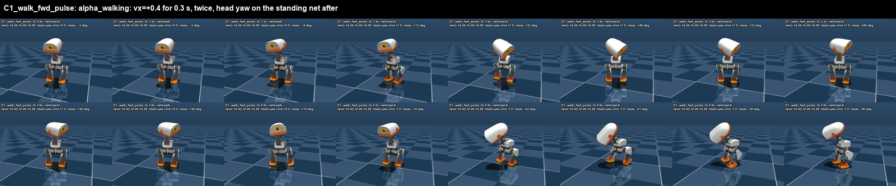
pulse 1 (head left after): foot left, peak 11 mm, down 0.20 m/s, peak-to-land 0.12 s, other foot planted 89 %, head yaw L +60° / R -6° pulse 2 (head right after): foot right, peak 21 mm, down 0.31 m/s, peak-to-land 0.12 s, other foot planted 90 %, head yaw L +58° / R -57° fell False, max tilt 8.3°, ends upright True, max joint speed 8.6 rad/s
alpha_walking: wz=+1.5 for 0.3 s (turn step), twice, head yaw after
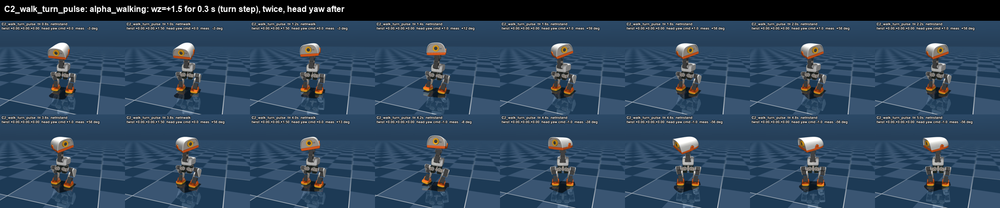
pulse 1 (head left after): foot right, peak 5 mm, down 0.09 m/s, peak-to-land 0.06 s, other foot planted 98 %, head yaw L +59° / R -3° pulse 2 (head right after): foot right, peak 10 mm, down 0.10 m/s, peak-to-land 0.14 s, other foot planted 98 %, head yaw L +58° / R -56° fell False, max tilt 6.9°, ends upright True, max joint speed 5.8 rad/s
alpha_walking: (-0.35,0,0.22) backward pulse 0.3 s with a 0.25 bow before it, twice
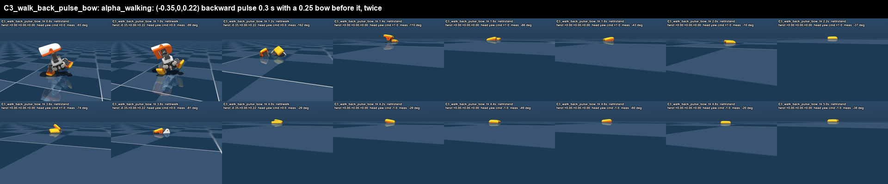
pulse 1 (head left after): foot right, peak 58 mm, down 0.68 m/s, peak-to-land 0.06 s, other foot planted 75 %, head yaw L -7° / R -174° pulse 2 (head right after): foot right, peak 22 mm, down 0.03 m/s, peak-to-land 0.02 s, other foot planted 97 %, head yaw L -18° / R -81° fell True, max tilt 84.9°, ends upright False, max joint speed 15.5 rad/s
alpha_walking: vy=+0.3 for 0.3 s (side step), twice, head yaw after
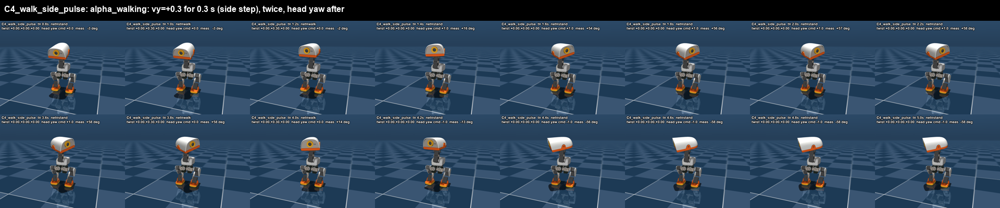
pulse 1 (head left after): foot right, peak 0 mm, down 0.00 m/s, peak-to-land 0.02 s, other foot planted 100 %, head yaw L +58° / R -3° pulse 2 (head right after): foot right, peak 2 mm, down 0.01 m/s, peak-to-land 0.02 s, other foot planted 100 %, head yaw L +58° / R -58° fell False, max tilt 2.8°, ends upright True, max joint speed 5.8 rad/s
happy-hop one-shot twice (both feet: an angry jump), head yaw between
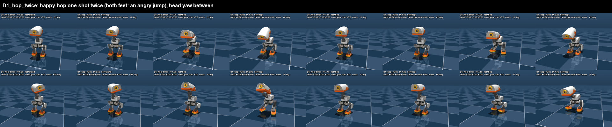
hop 1: foot left, peak 46 mm, down 1.03 m/s, peak-to-land 0.06 s, other foot planted 89 %, head yaw L +3° / R -4° hop 2: foot left, peak 39 mm, down 1.00 m/s, peak-to-land 0.06 s, other foot planted 91 %, head yaw L +58° / R -4° fell False, max tilt 17.3°, ends upright True, max joint speed 15.3 rad/s
alpha_stand: body z -0.03 pulse 0.3 s (crouch-bounce, both feet stay) + head yaw
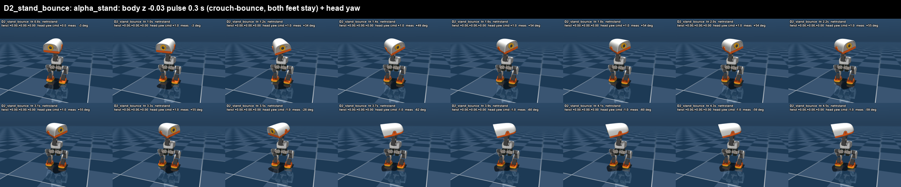
pulse 1 (head left): foot right, peak 0 mm, down 0.00 m/s, peak-to-land 0.02 s, other foot planted 100 %, head yaw L +55° / R -28° pulse 2 (head right): foot left, peak 0 mm, down 0.00 m/s, peak-to-land 0.02 s, other foot planted 100 %, head yaw L +55° / R -62° fell False, max tilt 2.8°, ends upright True, max joint speed 11.0 rad/s
alpha_stand: body roll +0.2 pulse 0.3 s (weight shift, does a foot unload?) + head yaw
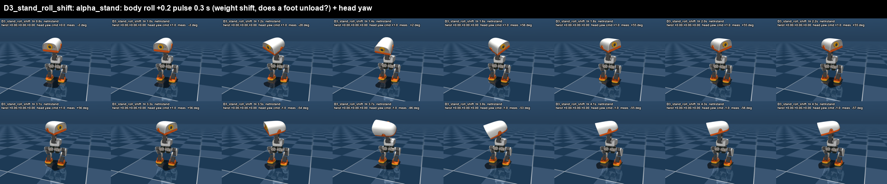
pulse 1 (head left): foot left, peak 1 mm, down 0.00 m/s, peak-to-land 0.02 s, other foot planted 100 %, head yaw L +56° / R -54° pulse 2 (head right): foot right, peak 4 mm, down 0.02 m/s, peak-to-land 0.02 s, other foot planted 99 %, head yaw L +56° / R -107° fell False, max tilt 3.2°, ends upright True, max joint speed 14.6 rad/s
alpha_walking: vx=+0.6 for 0.4 s (stronger step), twice, head yaw after
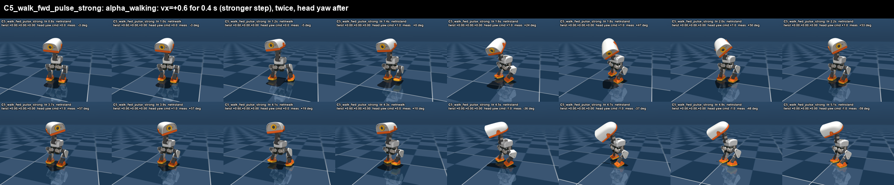
pulse 1 (head left after): foot left, peak 16 mm, down 0.34 m/s, peak-to-land 0.2 s, other foot planted 85 %, head yaw L +57° / R -5° pulse 2 (head right after): foot right, peak 18 mm, down 0.28 m/s, peak-to-land 0.1 s, other foot planted 88 %, head yaw L +58° / R -59° fell False, max tilt 7.7°, ends upright True, max joint speed 8.2 rad/s
Flamingo r2: flag up 1.5 s, flag down (foot lowers), head yaw sent to the flamingo net; twice, left foot
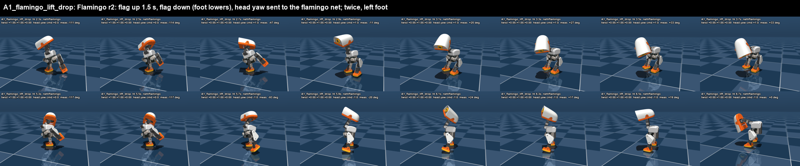
stomp 1 (head left): foot left, peak 72 mm, down 0.48 m/s, peak-to-land 0.36 s, other foot planted 99 %, head yaw L +34° / R -116° stomp 2 (head right): foot left, peak 81 mm, down 0.36 m/s, peak-to-land 0.44 s, other foot planted 100 %, head yaw L +24° / R -117° fell False, max tilt 28.3°, ends upright True, max joint speed 9.2 rad/s
Flamingo r2: flag up only 0.7 s (interrupt the lift early), twice, left foot
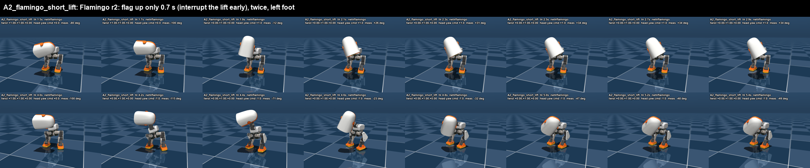
stomp 1 (head left): foot left, peak 3 mm, down 0.00 m/s, peak-to-land None s, other foot planted 100 %, head yaw L +34° / R -115° stomp 2 (head right): foot left, peak 7 mm, down 0.10 m/s, peak-to-land 0.06 s, other foot planted 100 %, head yaw L -19° / R -115° fell False, max tilt 23.8°, ends upright True, max joint speed 12.2 rad/s
Flamingo lifts the left foot 1.2 s, then twist=0 -> standing net takes over (foot pulled to HOME) + head yaw
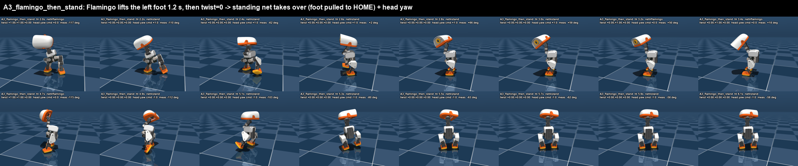
stomp 1 (head left): foot left, peak 33 mm, down 0.26 m/s, peak-to-land 0.1 s, other foot planted 95 %, head yaw L +68° / R -116° stomp 2 (head right): foot left, peak 31 mm, down 0.29 m/s, peak-to-land 0.16 s, other foot planted 96 %, head yaw L -3° / R -137° fell False, max tilt 28.2°, ends upright True, max joint speed 13.9 rad/s
Same as A3 with a body-pitch bow (0.25) on the standing net during the drop
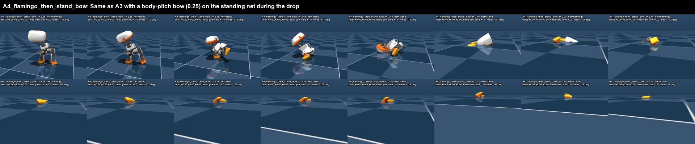
stomp 1 (head left): foot left, peak 81 mm, down 0.68 m/s, peak-to-land 0.24 s, other foot planted 97 %, head yaw L +3° / R -174° stomp 2 (head right): foot left, peak 40 mm, down 0.17 m/s, peak-to-land 0.16 s, other foot planted 97 %, head yaw L -6° / R -123° fell True, max tilt 88.3°, ends upright False, max joint speed 16.1 rad/s
A5 mirrored: RIGHT foot lifted 1.8 s (the flamingo swings the head LEFT by itself), twist=0 -> standing net slams it down and snaps the head RIGHT; twice
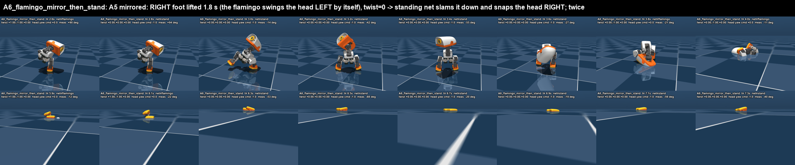
stomp 1 (head left): foot right, peak 107 mm, down 0.74 m/s, peak-to-land 0.38 s, other foot planted 62 %, head yaw L +94° / R -61° stomp 2 (head right): foot right, peak 27 mm, down 0.06 m/s, peak-to-land 0.02 s, other foot planted 59 %, head yaw L -11° / R -94° fell True, max tilt 89.8°, ends upright False, max joint speed 16.4 rad/s
Flamingo lifts the left foot for 1.8 s (foot at ~7 cm), then twist=0 -> standing net pulls it down + head yaw
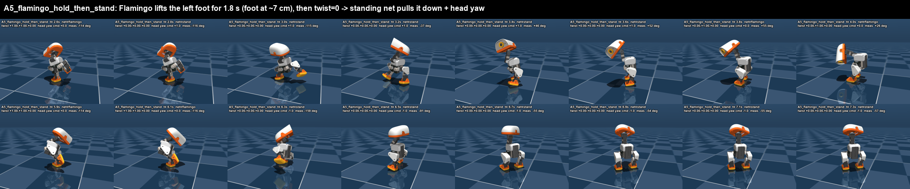
stomp 1 (head left): foot left, peak 113 mm, down 1.05 m/s, peak-to-land 0.14 s, other foot planted 94 %, head yaw L +57° / R -144° stomp 2 (head right): foot left, peak 112 mm, down 1.09 m/s, peak-to-land 0.14 s, other foot planted 95 %, head yaw L -3° / R -165° fell False, max tilt 28.2°, ends upright True, max joint speed 15.2 rad/s
{kind=link}
{kind=link}
{kind=link}
{kind=link}
{kind=link}
{kind=link}
{kind=link}
{kind=link}
{kind=link}
{kind=link}
{kind=link}
{kind=link}
{kind=link}
{kind=link}
{kind=link}
{kind=link}
{kind=link}
{kind=link}
{kind=link}
{kind=link}
{kind=link}
{kind=link}
{kind=link}